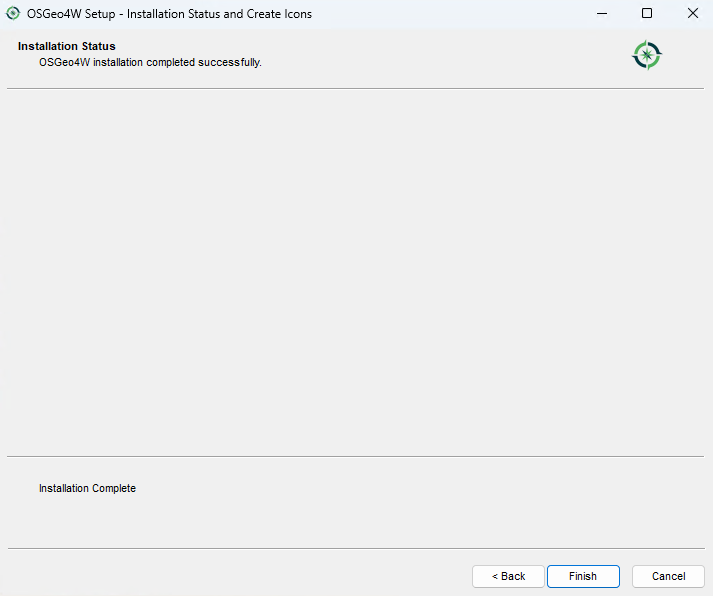
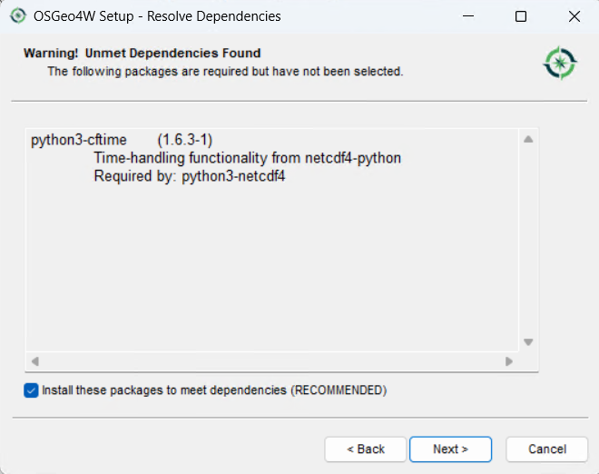

QGIS and FLO-2D Plugin Install Instructions
QGIS is an open-source geographic information system software designed for spatial data analysis and visualization. The FLO-2D Plugin uses QGIS tools to effectively prepare FLO-2D data, providing an enhanced modeling experience within a user-friendly environment.
Step 1: QGIS Installation
Choose one of the following methods:
Option A – QGIS Latest Long-Term Release (Recommended)
The following method uses the OSGeo4W Network Installer to install the current QGIS LTR version and
adds Python modules such as h5py and netCDF4.
Download the OSGeo4W Installer
Choose the OSGeo4W Network Installer for 64-bit Windows.
Launch the Installer
Run osgeo4w-setup.exe and choose Express Installation from the main menu.
{kind=link}
Select the download site
Choose a download site from the list provided.

Select Packages to Install
Enable the following items:
QGIS (optional)
QGIS (LTR)
GDAL
GRASS GIS (optional)

Accept the Dependencies
Install the dependencies when prompted.

Accept the License Agreements
Accept the license agreements to continue.

The installation should start. This may take some time depending on your internet connection.

Click the Finish button when the installation is complete.
{kind=link}
Install Additional Python Modules
Run the OSGeo4W Setup program again and select Advanced Install.
Click Next until reaching the package selection screen.
Filter the package list by typing h5py in the search box. Click the Skip button to select the latest version for installation.

Repeat the process for netCDF4.

Accept any dependencies.
{kind=link}
Click Next and Finish to complete the installation.
Verify Installation
Search for and select the following packages:
h5pynetCDF4
Run the OSGeo4W Shell from the Start Menu.

Run the following commands inside the OSGeo4W Shell:
python -c "import h5py; print('h5py:', h5py.__version__)"
python -c "import netCDF4; print('netCDF4:', netCDF4.__version__)"
A version number indicates a successful installation.

Option B – QGIS Stand Alone Older Versions
Follow these instructions to set up an older version of QGIS.
Get an old stand alone installer from the QGIS download archive:
Note
The images reference QGIS version 3.34 and 3.28 but the steps are the same for any stand alone version of QGIS.

Double click the QGIS installer.
Finish installing with the default settings.

Step 2: FLO-2D Plugin
Setup QGIS and install the FLO-2D Plugin.
Important
This step should be performed by the End User. If it is done on an Admin account, the profile will only be available on that account.
Open QGIS.

Click Settings → Options.
{kind=link}
Click the CRS tab and set the options shown below.

Get the Plugin.
Download FLO-2D PluginNavigate to the Plugin Manager.

Install the Plugin.
Click the Install from ZIP tab → Browse to the downloaded ZIP file → Install Plugin.

Step 3: Additional Plugins
These recommended plugins can be installed from the All Plugins menu:
FLO-2D Rasterizor
FLO-2D MapCrafter
Quick Map Services
Profile Tool
Curve Number Generator

Quick Map Services requires an additional step.
Click the QMS icon → Settings → More Services → Get Contributed Pack.

This concludes the installation and setup. Tutorial data is located here:
C:\\Users\\Public\\Documents\\FLO-2D PRO Documentation\\Example Projects\\QGIS Tutorials